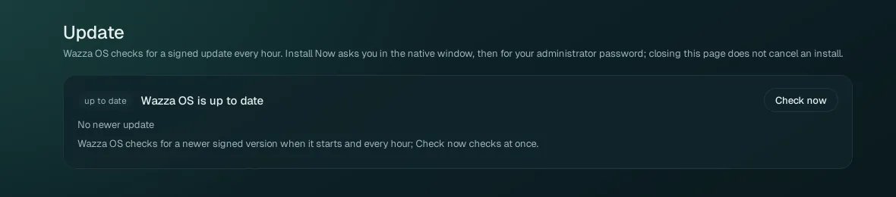

The Update page
Wazza OS checks for a new signed version when it starts and every hour. An update that changes only the interface applies with no restart and no password when you click Update now: your VMs, apps and Chats keep running. Any other update you download, install with your administrator password, and finish with one restart. Your VMs, Chats and settings stay.
Open the Update page#
Click Update in the Home menu (open Home with the + at the end of the tab strip). When an update is waiting, a notification says so too (Home › Notifications, filter Updates).

Check now checks at once instead of waiting for the next hourly check. The page says Wazza OS is up to date only after a signed update list was really read and holds nothing newer.
Install an update#
When a newer version exists, the page shows it with its version, its date, and the changes since your version (Technical changes, Known issues). Click Download Update.
When your computer cannot install it yet (pkexec, which asks for your password, is missing: on Arch without polkit, or with the tarball), the page says so above the button before anything is downloaded, with the command that installs pkexec on your system, and the button reads Download anyway. Run the command first, or download now: the download is kept, and Install Now works once pkexec is installed.
Wazza OS downloads the package from Wazza's release server,
os-downloads.wazza.ai(a network that filters sites must allow it), and checks it against its signature (Downloading and verifying the package, with the bytes downloaded). Cancel Download stops it. When it ends: Download complete and verified. Select Install Now to continue.Click Install Now. A small confirmation window of Wazza OS asks you to confirm (Install Now, or Install Later to keep the download for later).
Your system asks for your administrator password (the installation goes through your system's package manager, by pkexec and your desktop's password prompt). The page follows the install: copying the verified package, checking it against its signed hash, installing, setting up the new version, with a percentage. The Wazza OS package for Debian, Ubuntu, Fedora and openSUSE installs pkexec with it. On Arch (where polkit, which most desktops already have, carries it) and with the tarball it may be missing: the message then names the command that installs it on your system.
When the page says Installed. Restart Wazza OS to finish., click Restart Wazza OS. Wazza OS closes and starts again on the new version; your tabs come back.
Coming from alpha 2 or earlier, the first start of the new version says once: Wazza OS now uses wazza.ai: sign in again. Earlier versions signed you in on a test website by default; sign in to your Wazza OS account again in Home › Sign in.
Closing the Update page does not cancel an install, and the update is installed exactly once. After the restart, Settings › General › About shows the new version under both Running and Installed.
Install the new package over the old one, exactly like the first install (Install › Update). Never remove the old package first: removing it deletes your Wazza OS data.
Updates without a restart#
Many updates change only the Wazza OS interface, not its engine. Those apply while your VMs, your apps and their tabs, and your Chats keep running. A Chat that is answering finishes first: the update waits for it.
Wazza OS downloads such an update by itself (about 20 MB) and checks it against its signature. The Update page then shows Wazza OS {version} is ready with the tag no restart: Ready (about 20 MB). No restart: your VMs, apps and Chats keep running; the windows refresh once. Private tabs (Incognito browser tabs, Wazza OS's sign-in tab) keep nothing, so the update waits until you close them.
Click Update now. No password is needed. The windows of Wazza OS refresh once; the VMs, apps, tabs and Chats stay as they were, and the page says Applied with no restart.
If Wazza OS is busy, the card says what it waits for (Waiting for ...: a Chat answering, a VM starting or stopping, a sign-in, the package update or an app install to finish, or your private tabs to close) and applies the update as soon as that ends. A private tab (an Incognito browser tab, or Wazza OS's sign-in tab) keeps nothing, so the refresh would end it with its pages and anything typed there: the update waits until you close it. Later, or quitting Wazza OS first, keeps the update: it applies at the next start of Wazza OS, with the same check as Update now: if the new interface does not come up, Wazza OS goes back to the previous one by itself. New versions of apps that the update carries take effect with it too (at Update now, or at that next start), never before.
If the new interface does not come up within 30 seconds, Wazza OS goes back to the previous one by itself and says The update could not be applied; Wazza OS kept the previous interface. Nothing else changes.
Such an update can also carry new versions of apps. An app updates the next time you open it, and shows that it is updating. A tab that is already open keeps the version it started with; the old version is removed once its last tab is closed. An app that can have only one version in a VM waits until no tab of it is open (Apps that have only one version).
Updates that restart Wazza OS#
An update that changes the engine of Wazza OS is installed as above (Download Update, Install Now, your password), and then needs one restart. When you click Restart Wazza OS:
Every tab whose app has unsaved work asks first, one at a time, as when you quit: Close without saving, Save (the tab's Chat is asked to save it), or Keep open. Keep open cancels the restart; the page keeps Restart Wazza OS for later.
A private tab or window (an Incognito browser tab, also an Incognito or Guest window opened in a browser tab, or Wazza OS's sign-in tab) keeps nothing and does not come back after a restart, so while one is open the restart does not start, nothing is asked and nothing is closed. Close your private tabs and windows, then click Restart Wazza OS again. If Wazza OS could not check a VM's Chromium for such a window, it says so and waits too: close the Chromium tabs there, or stop that VM.
After the restart, every tab comes back, and its app reopens with its project if the project was saved.
Updating from Wazza OS 0.3#
Version 0.3.1 brings a new, smaller VM image. When you update from 0.3, your files, Chats and settings in the VM come over to the new image at the VM's next start, with every file in Hermes's memories, Hermes's persona (SOUL.md), your Chrome profile and the settings of every app you added yourself, and the update checks that each of your files arrived. Your shell history, and the app settings the new image already has, start at the new defaults. If that copy cannot finish at once, your Chats still start, and the copy tries again at the VM's next start. VM backups made before the update can still be restored. When you update with Install now, every VM that runs while the update installs starts again with its apps, a VM you made with Open in a new VM too, at its own size.
Updating from Wazza OS 0.2.0#
Wazza OS 0.2.0 (build b8069fa40737, November 5) cannot ask your apps about their unsaved work when it restarts for an update. So when you install a newer version from it, the install itself asks first, before anything is replaced:
Each app open in your VM is asked to close, as its tab's × does. An app with unsaved work asks you in its own window: click into the app, then answer it there. If an app's question has no Save button (GIMP's "Quit GIMP"), choose Cancel and save your work: the update asks the app again within a minute.
A private tab or window (an Incognito browser tab, also an Incognito or Guest window opened in a browser tab, and Wazza OS's sign-in tab) keeps nothing, so the update waits until you close it.
Another running VM holds the update too. Show it (Settings › Virtual machines › This window shows), close its apps, then stop it. Never stop a VM while its apps are open: a stop ends them without asking.
While the update waits for your apps, your system's package manager stays busy (its lock is held), so your other system updates, automatic ones included, wait too. On Debian, Ubuntu, Fedora and openSUSE it waits at most 40 minutes, then says Wazza OS's update was not installed: nothing was installed and nothing was lost, and any app the update already closed stays closed until you open it again. On Arch Linux it waits until your apps are closed. An app you open while the update installs makes it wait again, with no limit, until you close it.
When it is installed, Wazza OS restarts by itself, and the apps it closed reopen in their tabs.
On openSUSE Tumbleweed with SELinux on (its default): if every update ends with Update failed; installation was
not proved, your installed version cannot start its own installer there, because the system's security policy
refuses it. Install the new version once by hand: download its .rpm and run the command in
Install a downloaded package › openSUSE. Wazza OS restarts by itself when the
install has finished. From that version on, updates install from inside Wazza OS again.
What the messages mean#
| The page says | What it means, what to do |
|---|---|
| Wazza OS is up to date | No newer version. Nothing to do. |
| Wazza OS has not checked for updates yet / Not checked yet | The first check of this start has not run yet. Click Check now. |
| The update server could not be reached (offline, or it timed out). | No Internet, or the server did not answer. Check your connection, then Check now. |
| The update server is limiting requests from this computer. Try again in a minute. | Too many checks in a short time. Wait a minute. |
| A download failed a moment ago: Download Update is available again after a short wait | Wazza OS waits 30 seconds, then 2 minutes, then 10 minutes between attempts. The button comes back by itself. |
| Four downloads completed this hour | A limit against loops: Download Update comes back after the hour. |
| Wazza OS needs pkexec to install this update, and this computer does not have it. Install it with: … | Said before the download (the button reads Download anyway), while it downloads and before Install Now: pkexec, the tool that asks for your password, is missing. Run the command the message names for your system (the same as in the Install it with: … then click Install again message below). You can download first: the download is kept until pkexec is installed. |
| The package on the server is not the size its signed release names. Nothing was installed. | The download did not match its signature, so it was refused. Try again later. |
| This version is no longer published: a newer one replaced it while it downloaded. | Wazza OS checks for the newer one by itself. Download that one. |
| Downloaded and verified, not installed yet: select Install Now. | The download is ready; click Install Now when it suits you. |
| Install Now was not confirmed. The update stays downloaded and verified: select Install Now again. | The confirmation window was closed or answered Install Later. Nothing is lost. |
| The confirmation window got no answer within 30 seconds. | Click Install Now again and answer the window. |
| Wazza OS's window was not in front, so the confirmation could not be shown. | Bring Wazza OS to the front, click Install Now again. |
| Waiting for the administrator password, then installing | Type your password in the system's prompt. |
| Wazza OS needs pkexec to install this update. Install it with: … then click Install again. | pkexec, the
tool that asks for your password, is missing. Run the command the message names for your system (openSUSE:
sudo zypper install pkexec; Fedora: sudo dnf install polkit; Arch:
sudo pacman -S polkit; Debian, Ubuntu: sudo apt install pkexec; on another system it names
/usr/bin/pkexec and the package that usually provides it, pkexec or polkit), then click
Install Now again. Nothing was installed; the update stays downloaded. |
| Wazza OS could not ask for your password: no authentication agent is running. | Your desktop's password prompt (its polkit agent) is not running, so no password could be asked. Log out and back in, or start your desktop's polkit agent, then click Install Now again. Nothing was installed; the update stays downloaded. |
| Installed. Restart Wazza OS to finish. | Click Restart Wazza OS. |
| Close your private tabs and windows first (Incognito browser tabs, also an Incognito or Guest window opened in a browser tab, and Wazza OS's sign-in tab): they keep nothing, so the restart waits for you. Then choose Restart Wazza OS again. | A private tab is open in a Wazza OS window. Nothing was restarted or closed, and the update stays installed. Close your private tabs, then click Restart Wazza OS again. |
| Wazza OS {version} is ready (no restart): Ready (about 20 MB). No restart: your VMs, apps and Chats keep running; the windows refresh once. Private tabs (Incognito browser tabs, Wazza OS's sign-in tab) keep nothing, so the update waits until you close them. | An update of the interface only. Click Update now, or Later to get it at the next start. |
| Waited 30 minutes for ... The update applies at the next start of Wazza OS, or now with Update now. | What it waited for (a Chat answering, a VM starting, ...) did not end within 30 minutes. Nothing is lost: the update stays ready. Click Update now to apply it now, or it applies when Wazza OS next starts. |
| Some app updates in this update could not be read; those apps keep their current version. | The interface was updated; a few apps' new files did not check out, so those apps keep the version they had. Wazza OS fetches their files again once by itself. Nothing to do. |
| Waiting for ... (a Chat to finish its answer, a VM to start, a sign-in to finish, an app install to finish) | Wazza OS applies the update as soon as that ends. Nothing to do. |
| The update could not be applied; Wazza OS kept the previous interface. | The new interface did not come up, so Wazza OS went back to the previous one by itself. Your VMs, apps and Chats were not touched. The next update fixes it. |
| Wazza OS could not restart by itself | Quit Wazza OS and start it again from your app menu. |
| Update failed; installation was not proved (every time, on openSUSE Tumbleweed) | Your installed version cannot start its own installer while SELinux is on: install the new version once by hand, as Updating from Wazza OS 0.2.0 says. |
| The original installation result is unknown. Check status; do not repeat it. | Click Check Installation Status: Wazza OS reads what your package manager installed. Do not install a second time. |
| Your version is not in the update history, so the list of changes since it may be incomplete. | Only the list of changes is affected; the update itself is fine. |
Still stuck: Troubleshooting › Updates.